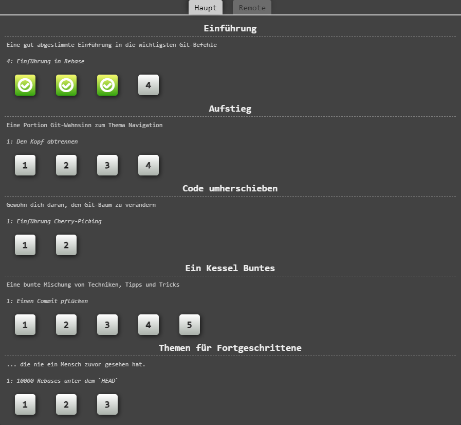

Mindestens 12 Aufgaben auf der git tutorial Website abschließen und entweder ein Screenshot der Aufgabenüberischt an uns per email senden oder in der Übung die Übersicht mit 12 erfolgreichen Aufgaben vorzeigen
Hier ein Screenshot der Übersicht, in welcher die ersten drei Aufgaben erfolgreich abgeschlossen wurden, die Reihenfolge spielt für das erledigen der Übung keine Rolle, Ihr könnt also 12 beliebige Aufgaben lösen
Ihr könnt die Bearbeitung auch Unterbrechen und mehrere Screenshots erstellen
ACHTUNG: Wenn Ihr den Browser oder die Session schließt, wird auch die Übersicht zurückgesetzt
